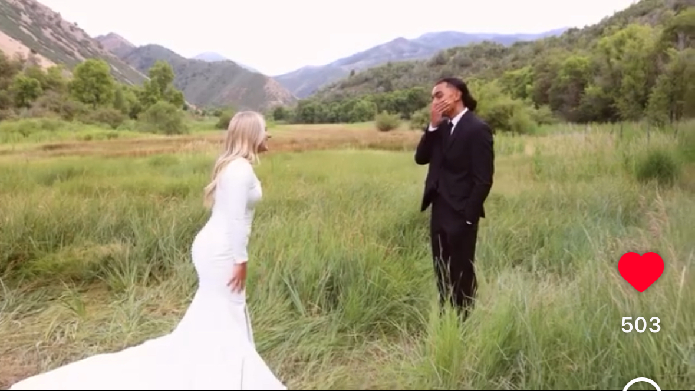

Home
First Looks
Example:

What are First Looks
A wedding first look is a private, pre-ceremony moment where the bride and groom see each other for the first time on their wedding day. Instead of waiting until the walk down the aisle, the couple meets in a quiet setting chosen by their photographer, allowing them to share an intimate, emotional moment together. First looks often help ease pre-ceremony nerves, create space for genuine reactions, and give the couple extra time for photos before the events of the day begin. Many couples choose this option to make their timeline smoother and to enjoy a peaceful, meaningful pause together before the celebration officially starts.